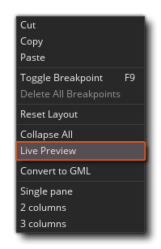
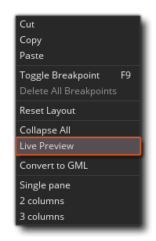

Another feature of DnD™ is that you can convert it into GML
(GameMaker Language) code, and in this way see what exactly is
going on behind the scenes when you use actions. Before actually
changing the actions into GML however, you can first Preview
them by using the right mouse button  menu
option Live Preview: 
menu
option Live Preview: 
Which will open a new window: 
As you add, change or remove DnD™ actions, the GML Live Preview will update to show you the actual code that is being created "behind the scenes". The code in the live preview cannot be edited directly, but you can select sections and copy them for pasting into GML scripts or Code Actions (for example).
If you decide that you want to convert the DnD™ into code after
seeing the preview, then this can be done again by clicking the
right mouse button  in any event workspace with actions
and selecting Convert To GML.
in any event workspace with actions
and selecting Convert To GML. 
The first time you do this you will be given a warning message
saying that this is a one way conversion, since you can
convert actions to code, but you cannot convert them back to
individual actions again later. Clicking "okay" here will
perform the conversion for you. 
The resulting code will use {} to delimit individual actions,
and you can clearly see what actions relate to which functions or
variable declarations within the code. If the DnD™ is more complex
then the code will be too, but the same general rules apply and
code will be structures sequentially exactly the same as you have
written the DnD™. Note that sometimes the code will have extra
local (temporary) variables added in to store certain values that
will be used, for example this: 
Will become this code: 
Here the code first of all creates a local (temporary) variable and sets it to false, then it checks if the instance exists and sets the local variable to the return of the function call. The local variable is then checked to see if it is true or false and if it is true the rest of the code is run.
When learning to program using Drag and Drop, this can be an
important tool in moving on to using GML at a later stage, but it's
by no means obligatory and you can still make great games using
DnD™! It's also worth noting that while the conversion process is
one way, after converting actions to code, you can go back
to using DnD™ again by using the right click menu in the code
editor and selecting "Convert To DnD™". This will place the
previously created code within an Execute
Code action and you can then continue to use DnD™ as before: